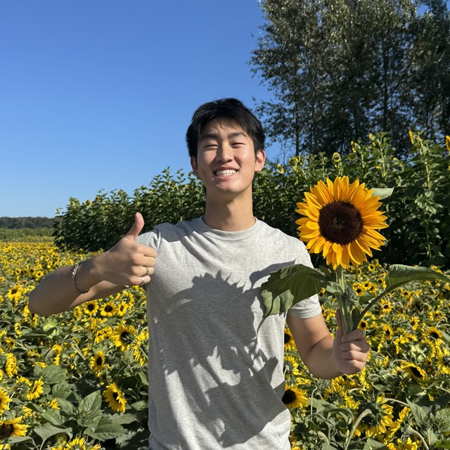

Hi, I'm Edward!
I am a sophomore at Carnegie Mellon University studying Design and Human-Computer Interaction.
I explore how design can be used as a vehicle to arrange complexity into intuitive experiences for frictionless human experiences.
Sunflower fields, late nights in studio, and the in-between moments that find their way back into the work.